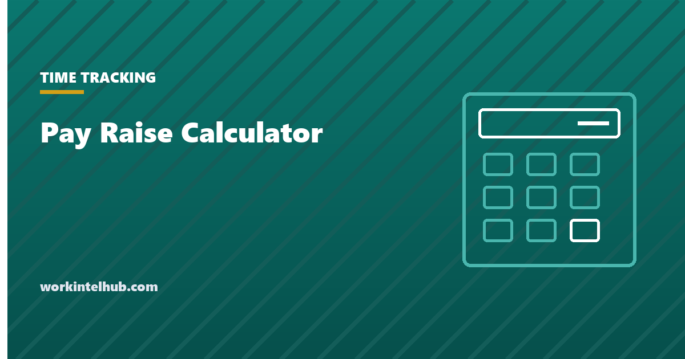

Pay Raise Calculator

A pay raise is usually announced as a percentage and felt as a number on a paycheck, and the distance between the two is where most confusion sits. Three per cent on $62,000 is $1,860 a year, which is $71.54 per bi-weekly paycheck before tax and closer to $50 after it. Whether that is a good raise depends on what prices did over the same year, which is the comparison the calculator makes for you.
The calculator works in either direction: enter a percentage to get the new pay, or a new pay to get the percentage. The rest of the page covers the arithmetic, what a typical raise looks like in 2026 and against inflation, how employers set raise budgets, and how to make the case for one.
Pay raise calculator
3.4% is the CPI-U rise for the 12 months to August 2026. Change it for your own comparison.
22% federal bracket plus 7.65% FICA is 29.65; add your state rate.
A raise is stated on base pay before tax. The real raise line subtracts the inflation figure you entered; the take-home line applies the marginal rate to the increase only, which is what actually changes in the paycheck.
The arithmetic
Three formulas cover every case.
- Percentage to new pay: new pay = current pay × (1 + raise ÷ 100). A 4 per cent raise on $55,000 is 55,000 × 1.04 = $57,200.
- New pay to percentage: raise = (new − current) ÷ current × 100. From $55,000 to $58,000 is 3,000 ÷ 55,000 = 5.45 per cent.
- Per paycheck: annual increase ÷ number of pay periods. $2,200 a year is $84.62 bi-weekly, $91.67 semi-monthly, $42.31 weekly.
For hourly pay, multiply the rate by scheduled hours and 52 to get the annual figure, then apply the same formulas; a $0.75 raise on $20 an hour at 40 hours is 3.75 per cent and $1,560 a year. Our salary to hourly calculator handles the conversion in both directions and explains the 2,080-hour assumption behind it.
The after-tax line is an estimate. A raise is taxed at the marginal rate, the rate on the last dollar earned, not the average rate on all income. For most full-time earners that is the 22 per cent federal bracket plus 7.65 per cent Social Security and Medicare, then state tax. A raise never pushes take-home pay down: only the dollars above a bracket threshold are taxed at the higher rate.
What a typical raise looks like in 2026
Employers set a salary increase budget each year, a percentage of total payroll to be distributed across merit, promotion and adjustment increases. For 2026, Mercer reports that US employers planned total increase budgets of 3.5 per cent, with 3.3 per cent for merit, essentially flat on 2025 actuals; the WorldatWork salary budget survey of 1,774 organisations put the mean at 3.6 per cent. Those are averages of budgets, not of individual raises: a typical distribution gives strong performers 4 to 6 per cent, solid performers around 3, and some employees nothing.
| Type of increase | Typical range | Notes |
|---|---|---|
| Merit, meets expectations | 2.5% to 3.5% | Close to the budget average |
| Merit, exceeds expectations | 4% to 6% | Funded by giving less elsewhere |
| Promotion | 8% to 15% | Usually to the new band's minimum or above |
| Market adjustment | Varies | Brings pay to the band when the market moved |
| Cost-of-living adjustment | Tied to CPI | Common in union contracts and government; rare elsewhere |
| Counter-offer or retention | 10% to 20% | Reactive; often below what leaving would pay |
The inflation comparison decides whether a raise is a raise. The Bureau of Labor Statistics reported the all-items CPI-U up 3.4 per cent for the twelve months to August 2026. A 3.3 per cent merit increase against that is a real cut of about 0.1 per cent; a 5 per cent raise is a real gain of about 1.5 per cent. The calculator's real-raise line does that division, which is (1 + raise) ÷ (1 + inflation) − 1 rather than a simple subtraction, though at these levels the two are nearly the same.
How raises are decided
From the employer's side a raise is a budget allocation, and the constraints are visible if you know where to look. The budget is set in the autumn for the following year. It is distributed by manager, often through a merit matrix that crosses performance rating with position in the pay band: a high performer below the band midpoint gets the largest percentage; a high performer already above it gets less, because the band caps pay for the role. Promotions come from a separate pool. Market adjustments happen when a benchmarking exercise finds a role has drifted below the market, which is more common now that pay transparency laws make competitors' ranges visible.
Two consequences follow. A raise request that arrives in November lands after the budget is set, so the useful conversation happens in late summer. And a request framed as "I need more" competes with everyone else's need, while a request framed as "my role is paid below the market, here is the evidence" competes with the company's retention risk, which is a stronger position. The HR metrics page explains why employers fear regretted turnover more than they resent raises.
Making the case for a raise
- Know the market number. Posted ranges for the same role at comparable employers, which pay transparency laws now put in job postings in fourteen states. Note the range midpoint, not the top.
- Know your number. The percentage and the annual amount, and what it costs the employer in total (add roughly 25 to 30 per cent for payroll tax and benefits). Ask for a figure, not a range.
- Bring evidence, not effort. Results with numbers attached, responsibilities added since the last review, and anything that changed the role. The self-evaluation examples show the format.
- Time it. Before the budget is set, after a visible win, or at a promotion. Not the week after a bad quarter.
- Ask about the mechanism. If the answer is no, ask what would make it yes and when it will be reviewed. A dated commitment is worth more than a vague one.
- Consider the whole package. A title change, a one-off bonus, extra leave or a training budget may be available when base pay is not, and some of them compound into the next raise.
If the raise arrives, the hourly equivalent and the take-home change are worth knowing before the first new paycheck, if only to avoid the disappointment of expecting the gross figure.
Key takeaways
- New pay is current pay times one plus the percentage; the percentage is the difference divided by current pay. Per paycheck, divide the annual increase by the pay periods.
- A raise is taxed at the marginal rate on the increase only. Take-home never falls because of a raise.
- US employers budgeted about 3.5 per cent for 2026 increases, with merit around 3.3. Strong performers see 4 to 6, promotions 8 to 15.
- Compare with inflation: CPI-U rose 3.4 per cent in the year to August 2026, so an average merit raise is roughly flat in real terms.
- Budgets are set in the autumn and distributed through a merit matrix. Ask before the budget is fixed, with market evidence.
- Frame the request as a market gap with numbers, not as need, and ask what would make a no into a yes and when.
Frequently asked questions
How do you calculate a pay raise percentage?
Subtract the old pay from the new pay, divide by the old pay and multiply by 100. A move from $55,000 to $58,000 is 3,000 divided by 55,000, or 5.45 per cent. To go the other way, multiply current pay by one plus the percentage: a 4 per cent raise on $55,000 is $57,200.
What is a good raise in 2026?
Employers budgeted about 3.5 per cent in total for 2026 increases, with merit increases around 3.3 per cent, according to Mercer and WorldatWork surveys. Anything above 4 per cent is above average for a merit raise. Against CPI inflation of 3.4 per cent in the year to August 2026, a raise needs to exceed about 3.5 per cent to be a real gain.
How much of a raise will I see in my paycheck?
Divide the annual increase by the number of pay periods, then remove tax at your marginal rate on that amount. A $2,000 raise paid bi-weekly is $76.92 before tax and roughly $54 after federal tax and FICA at the 22 per cent bracket, before state tax.
Does a raise push you into a higher tax bracket?
It can, but only the dollars above the bracket threshold are taxed at the higher rate. Take-home pay always rises with a raise. The exception is benefit cliffs, where higher income ends eligibility for a means-tested benefit, which is a separate calculation.
How is a cost-of-living raise different from a merit raise?
A cost-of-living adjustment tracks inflation, usually the CPI, and applies to everyone to preserve purchasing power. A merit raise rewards individual performance and varies by person. Most private employers give merit raises only, which is why comparing the raise with inflation matters.
When is the best time to ask for a raise?
Before the salary budget is set, which for most employers is late summer or early autumn for the following year, or immediately after a visible result or a change in responsibilities. Bring the market range for the role and a specific figure.